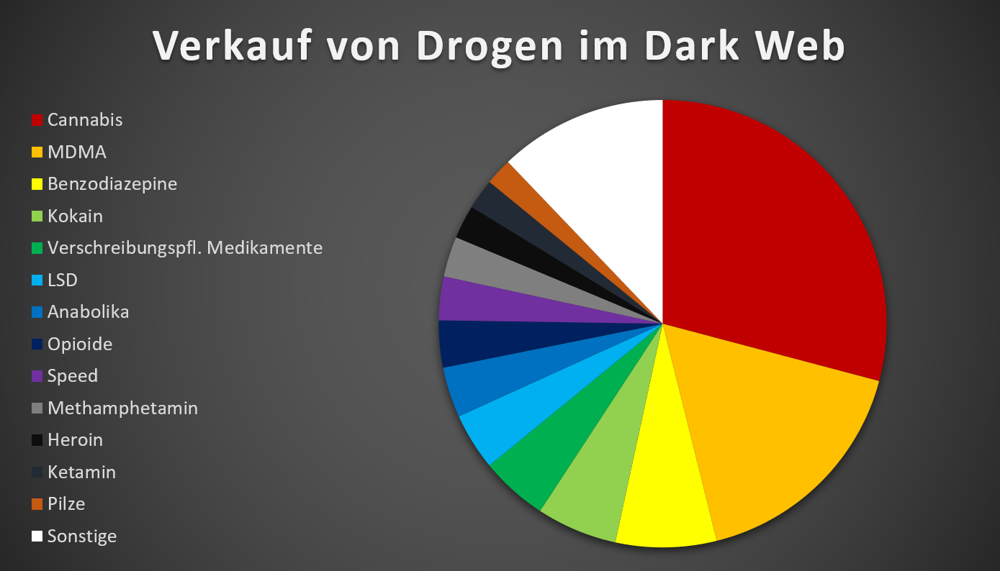

Handel und Schwarzmarkt im Dark Web
Wesentliche Bestandteile des Darknets sind die sogenannten Black Markets, die dem Zweck des Handels mit fast ausschließlich illegalen Gütern dienen (Handel mit Drogen, Waffen, Falschgeld, Daten).
Schwarzmärkte im Internet nehmen an Vielfalt und Volumen zu.
Drogenhandel
Die Waren mit dem großten Marktanteil, die im Dark Web gehandelt werden, sind Drogen und Medikamente. Durch eine systematische Umfrage unter Drogendealern und Konsumenten im Dark Web erlangte man erstmalig einen direkten Einblick.
Grundsätzlich werden fast alle Drogen und Medikamente illegal über das Dark Web gehandelt.

Waffenhandel
Insgesamt ist das Angebot an Waffen auf den Darknet-Plattformen deutlich geringer als beispielsweise das an illegalen Betäubungsmitteln oder Falschgeld.
Typisch für das Darknet ist auch eine relativ hohe Anzahl an Betrügern, die lediglich vortäuschen, Schusswaffen oder Munition anzubieten.
Datenhandel
Im Informationszeitalter spielt der Datenhandel eine immer wichtigere Rolle. Es gibt viele Informationen, die gehandelt werden. So auch im Dark Web, wo man sich das sogenannte Phishing zunutze macht.
Das sind vor allem E-Mails, in denen User dazu aufgefordert werden, ihre Daten einzugeben, damit Cyber-Kriminelle diese weiterverkaufen können.
 Was daraus folgt sind Daten zum Schnäppchenpreis.
Cyberkriminelle, die erfolgreich Daten sammeln können, vermeiden das Risiko gestohlene Informationen zu verwenden. Sie machen Gewinn, indem sie die gesammelten Informationen weiterverkaufen.
Der beste Weg dies zu tun ist im Dark Web. Die Daten werden dort zu niedrigen Preisen verkauft und können in verschiedenen Forenbeiträgen eingesehen und gekauft werden.
Was daraus folgt sind Daten zum Schnäppchenpreis.
Cyberkriminelle, die erfolgreich Daten sammeln können, vermeiden das Risiko gestohlene Informationen zu verwenden. Sie machen Gewinn, indem sie die gesammelten Informationen weiterverkaufen.
Der beste Weg dies zu tun ist im Dark Web. Die Daten werden dort zu niedrigen Preisen verkauft und können in verschiedenen Forenbeiträgen eingesehen und gekauft werden.